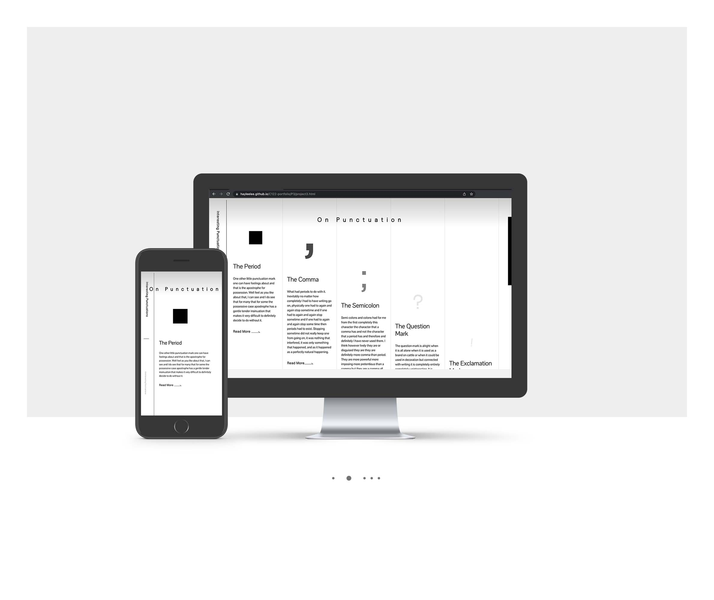

This webpage showcases “On Punctuation” written by Gertrude Stein. The elements within the site emphasize and reference the text strongly and make the interaction unique and engaging. The interface reflects the opinions given throughout the text as well.
